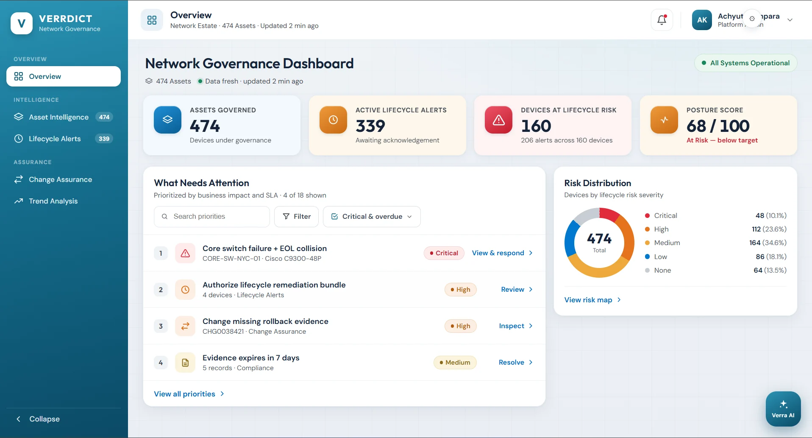
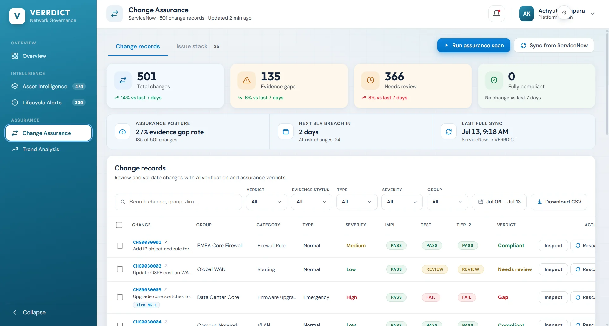
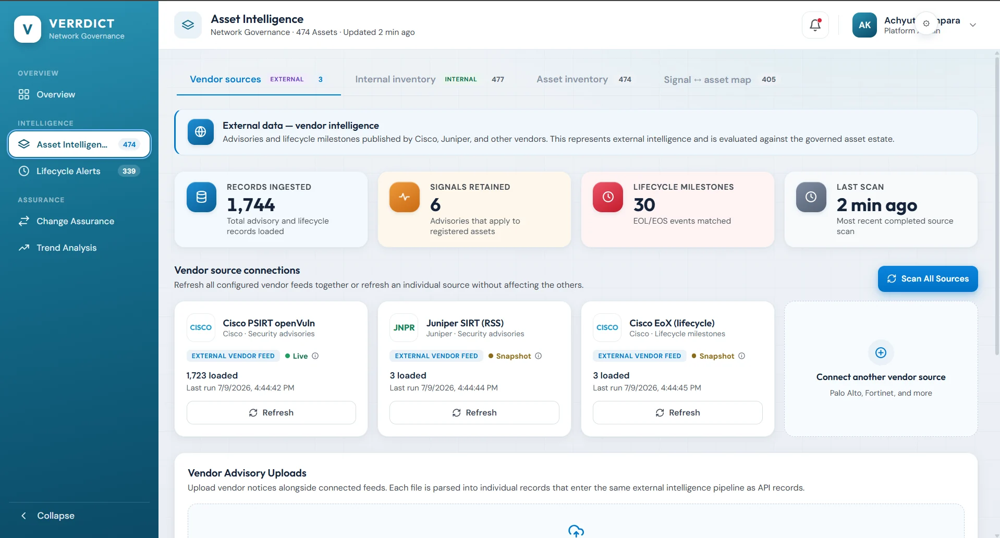
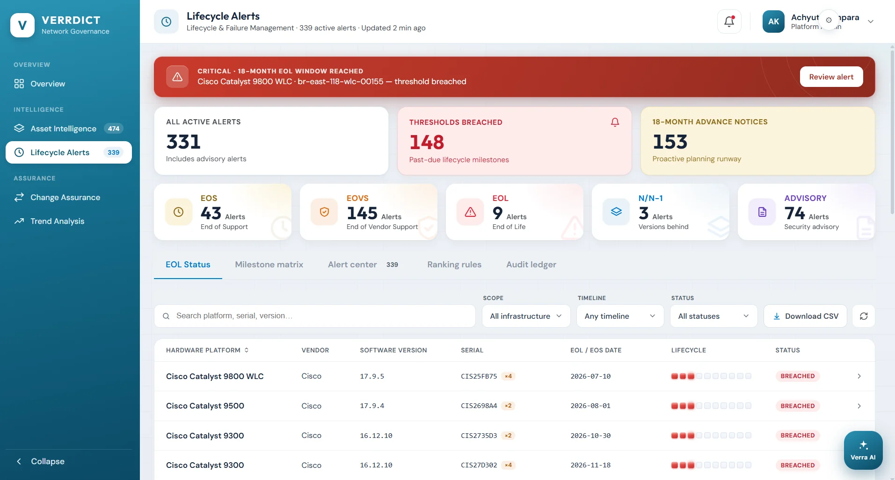
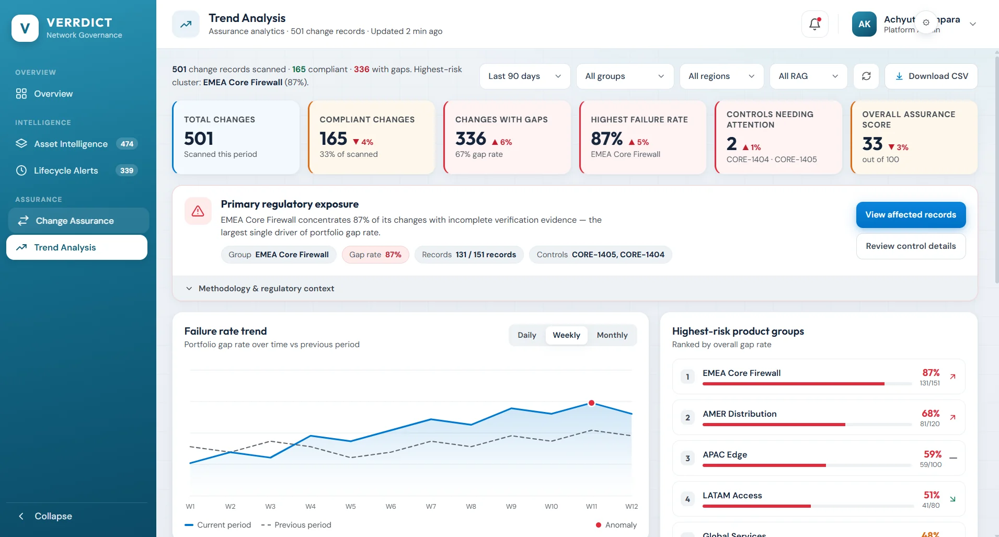

Network analyst
“Where do I start today?”
Blocked byEverything looked equally urgent.
UX case study · Network governance
Designing trust into network governance.
A large financial company tracked its network risk across three tools, and joined the results by hand in spreadsheets and email. I designed VERRDICT to put those checks in one place, so a reviewer can explain every decision they make.

Vendor advisories, the asset inventory and change records lived in separate tools. Reviewers couldn’t tell what to look at first, or why a device had been flagged.
Audited the existing tools, interviewed the team and compared other tools. That produced three insights about attention, trust and continuity, and five design decisions built on them.
Six modules on one shared record, where every verdict shows its reasons. Delivered to the brief and moving toward adoption. There are no live usage numbers yet.
Network governance is a loop, not a report. Devices are tracked, vendor warnings arrive, someone reaches a verdict, and that verdict has to hold up in an audit. If one link breaks, nobody can explain the result.
In the old setup the loop ran through spreadsheets. Two people could look at the same device and reach different conclusions, with nothing to show which was right.
Before
A decision with nothing behind it. Two people, same device, different conclusions.
“Where do I start today?”
Blocked byEverything looked equally urgent.
“Why does it say gap?”
Blocked byThe status showed, the reason didn’t.
“Is this data current?”
Blocked byNothing said when data was last checked.
“What is our exposure?”
Blocked bySeeing and fixing were separate trips.
The work was spread across tools, and the reasoning was hidden.
A data problem → a clarity problem. Reviewers didn’t need more data. They needed to see how each verdict was reached.
With two weeks and no research team, I ran the discovery activities side by side instead of in phases. The problem kept changing as the audit went deeper, so understanding it and agreeing on it happened at the same time.
| Category | One view | Explains itself | Audit trail |
|---|---|---|---|
| Vuln. scanners | Partial | No | Partial |
| Asset inventories | Assets only | No | No |
| Ticketing | No | Partial | Strong |
| VERRDICT goal | By design | By default | Built in |
Every tool shows the risk. Almost none show the reasoning behind it. The missing piece wasn’t more data. It was the link between the data and the judgement.
What I asked the team: Where do you go first? What makes you distrust a number? What do you show someone who challenges you? What would you stop doing in a spreadsheet?
Reviewers didn’t need more alerts. They needed to know which one to open first.
Severity doesn’t tell you what to do first, and 452 alerts that all look alike cause alert fatigue.
A verdict without a reason is a liability, not an answer.
Flags that came without a reason were escalated instead of resolved. This finding gave the product its name.
Where data came from mattered as much as what it said.
Vendor notices and internal records looked identical. Reviewers read the data in one tool and fixed problems in another.
How might we make every decision something a reviewer can act on, and explain to someone who wasn’t there, without leaving one place?
No status ships unless its reason is one click away.
Rank the work. A count on its own tells a reviewer nothing.
Say whether it’s external or internal, live or a snapshot, and how old it is.
Colour is reserved for risk. Nothing else competes for attention.
INTELLIGENCE What is true
ASSURANCE What we decided
Five places, one level deep. The audit trail is a by-product of deciding, not a separate job.
From opening the dashboard to acting on the top item.
Queue that reaches a verdict instead of being scrolled past.
Verdicts carrying a source and timestamp when audited.
Devices leaving the “no data” bucket week over week.
Each decision answers a finding from research. For each, I’ve noted the obvious option I turned down, and the trade-off I accepted.



Last heard from Jira 4 min ago
Schematic of the remediation flow.
With this many alerts on screen, colour had to mean one thing. Everything structural stays in navy and blue. Red, amber and green appear only when there’s a risk, and always with a word next to them.
Handed over as named tokens. No screen picks its own red.
Every state, threshold and ranking rule noted next to its screen.
Sizes, spacing and named tokens, so new modules get the risk colours without extra work.
Flows walked through with engineering before the build, not after.
Built screens checked against the specs, and differences logged.
Six modules, a component set, and flows checked against the agreed criteria.
This was a design project. There are no live usage numbers yet, and I haven’t made any up.
Test the ranking rules on live data, then measure time to first decision.
In regulated work, the interface is the argument.
If a screen can’t explain itself, the explanation ends up in email and people’s memory. Building the reasoning into the screens was the product.
What I’d do differentlyTest the ranking with real reviewers sooner.
The whole queue depends on reviewers trusting the ranking. Next, I’d validate the rules on live data and design the escalation path.

Thanks for reading